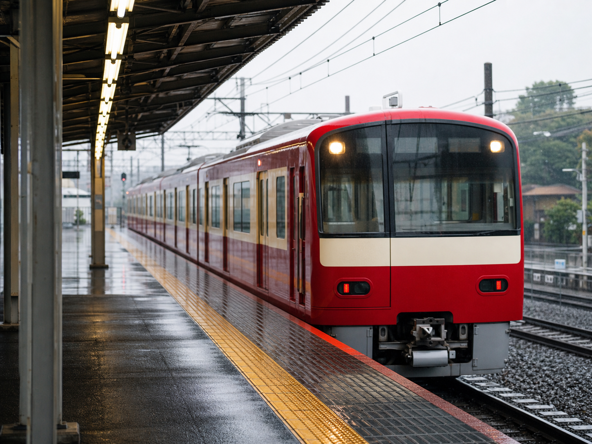
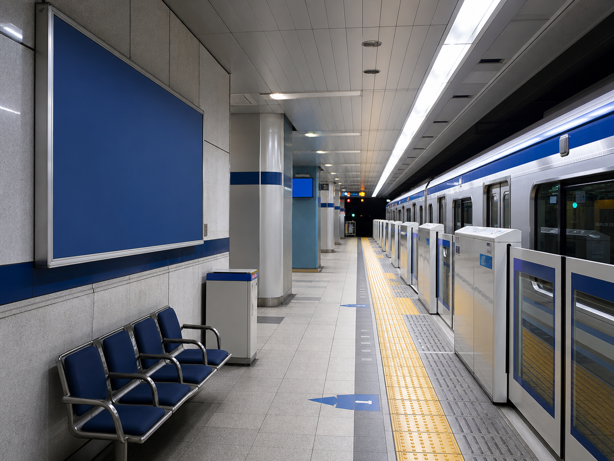

入口
入口
1
2
2ばんせんへ
2 の ホームへ いきます。
さがす: 青物横丁 / 2番線 / 品川・泉岳寺
入口
2 の ホームへ いきます。

京急 品川・泉岳寺2 の ホームで、でんしゃに のります。
みた で おります。
あおい I の かんばんへ いきます。

4番線 水道橋へ4 で、すいどうばしへ いく でんしゃに のります。
すいどうばし が みえたら、おります。
 A2
右へ
A2
右へ
A2 の でぐちを さがします。
 ASOBono!
ASOBono!
A2を でたら、みぎへ すすみます。